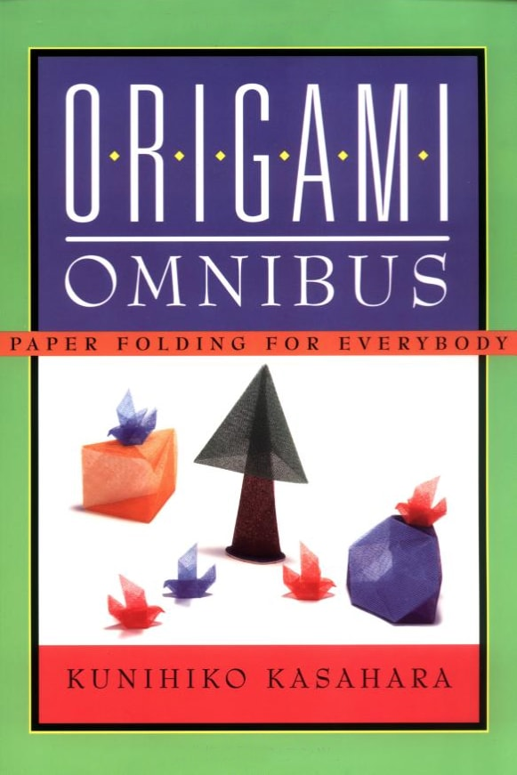
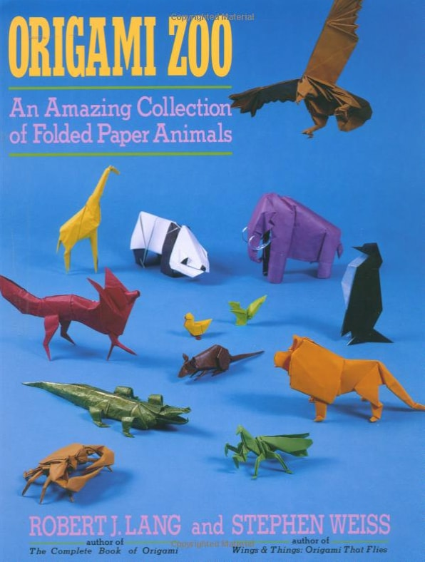
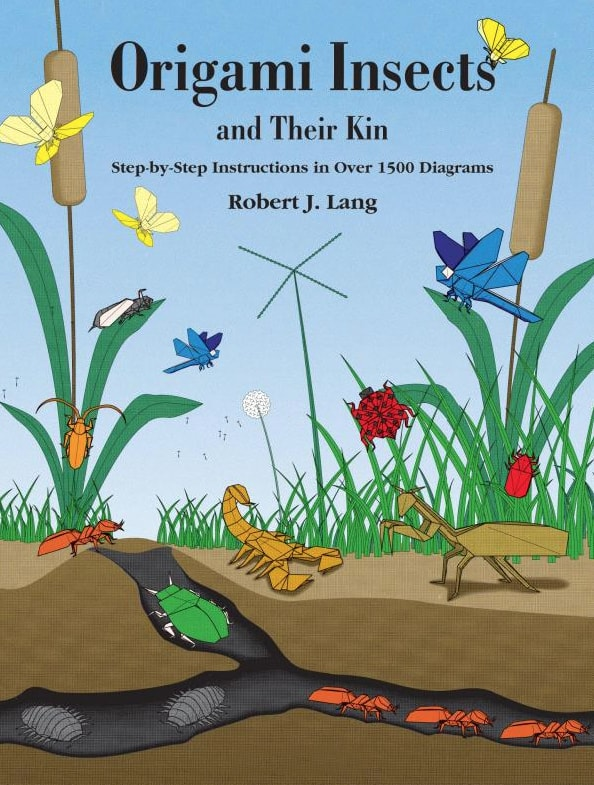
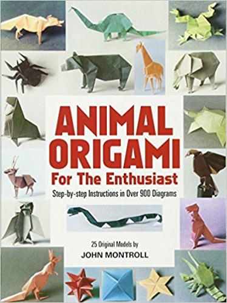
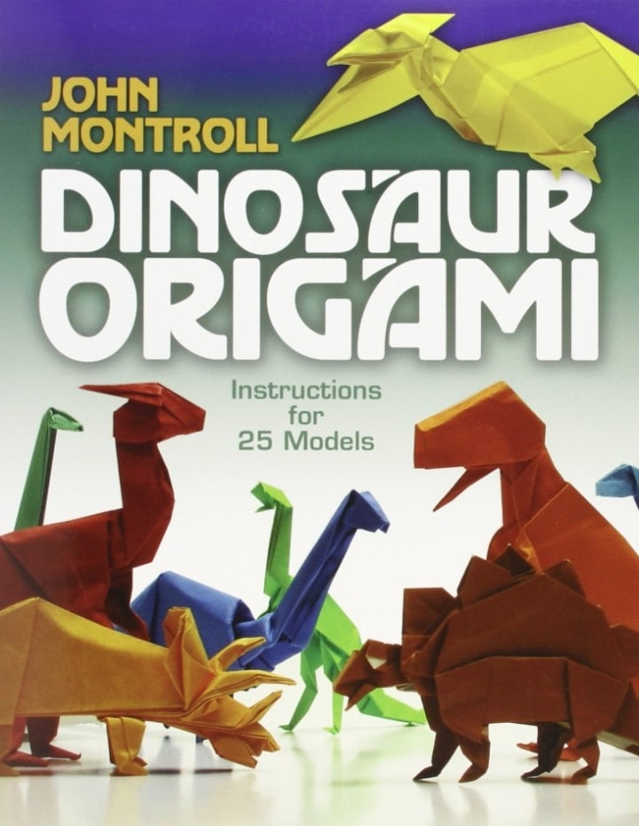

 This is one of my all time favourite origami books. There are diagrams for a wide variety of models ranging from pretty easy to intermediate difficulty. The diagrams are easy to read and throughout the book the author has quick little sections explaining some of the theory and math behind origami and origami design. Nothing too complicated. This book has one of my favourite models to fold, a Chinese dragon that looks really great but isn’t too difficult. There are also a ton of models in this book. Every time you pick it up you’re probably going to find something new to fold. I highly recommend this book.
 This is a book featuring 37 paper animals designed by Robert. J. Lang and Stephen Weiss. The models start off really simply and then get more difficult as you go through the book. You’ll find a section at the beginning showing how to make different kinds of folds, bases and how to do various techniques. This is an excellent book for someone who’s just starting with origami but isn’t really a beginner any more. There are lots of great animals to practice on.
 Robert J. Lang is a master at designing origami insects and this book features 20 of his excellent designs with easy to follow diagrams. You’ll find a wide variety of insects and a few spiders. A couple of the models aren’t too difficult to fold but the rest will require you to have at least an intermediate level of skill with origami and some of them can be a bit complicated.
 This is one of the best books if you’re looking for paper animals. It features sets of diagrams for 25 of John Montroll’s excellent animal designs. The book starts out pretty easy but some of the later models start getting more difficult. The crab later in the book is one of my favourite models to fold. It’s a bit tricky but not too hard and it looks amazing when it’s done.
 This book has a great collection of paper dinosaurs. The cover says there are 25 models but there are actually 30. This book includes most of the models from John Montreal’s previous Prehistoric Origami book plus a few more new ones. The diagrams have been re-worked and are more clear from the previous book as well. The models start out pretty easy but most of them are intermediate level.
For any queries, Get-In-Touch with us through the form in the contact page
Or, contact directly the developer through saamriddha@gmail.com